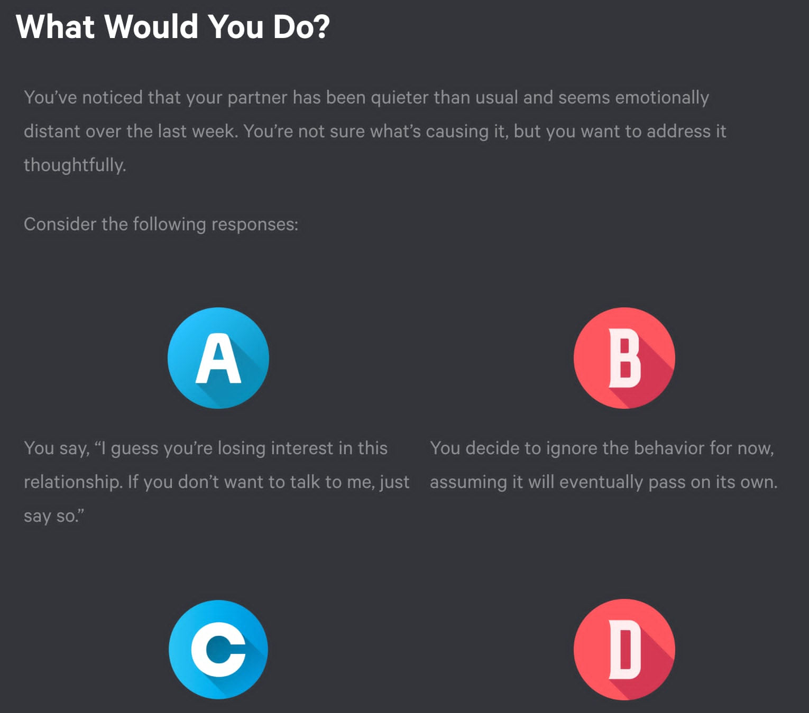

Rumie Build | Microlearning
Overcoming Emotional Distance
Microlearning module on emotional intelligence and relationship dynamics for global adult learners.

Goal
Help adult learners recognize emotional distance in relationships and choose actionable steps to reconnect quickly.
Target Audience
Global adult learners seeking practical guidance on relationship dynamics. The module is designed for:
- Adults experiencing emotional distance in romantic relationships
- Learners who prefer just-in-time, mobile-friendly learning
- Self-directed learners seeking actionable relationship strategies
Solution
Scenario-based microlearning module delivered through Rumie Build that:
- Uses realistic relationship scenarios (Sam & Jordan, Taylor & Mei) to illustrate emotional distancing
- Provides interactive quiz questions that guide learners through decision-making
- Offers concrete reconnection strategies (5-minute check-ins, small acts of warmth, "I feel" statements)
- Includes immediate feedback and reflection prompts to reinforce learning
- Delivers content in bite-sized, mobile-optimized format for on-the-go learning
Impact
The module helps learners identify early signs of emotional distance and provides practical, immediately applicable strategies for reconnection, supporting behavior change through scenario-based learning and actionable takeaways.